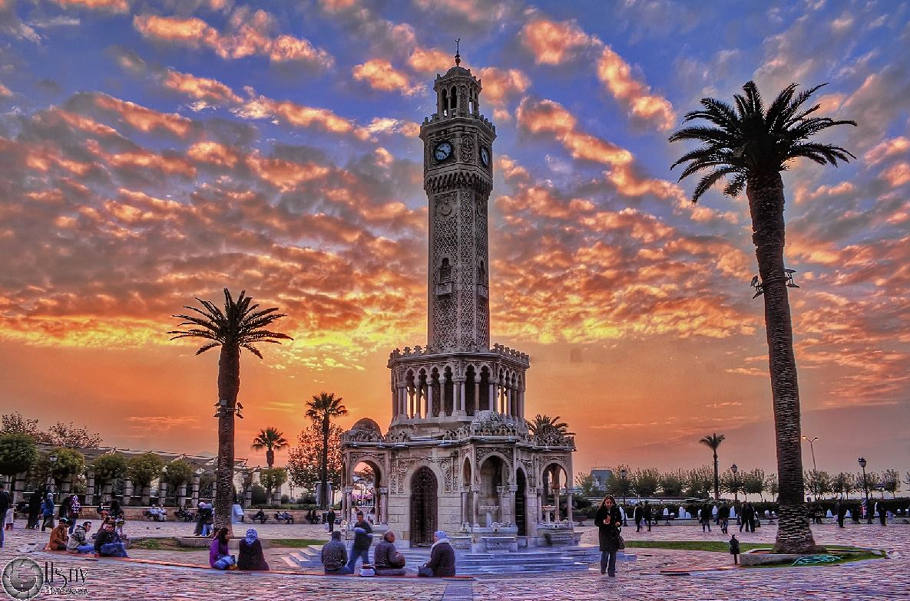
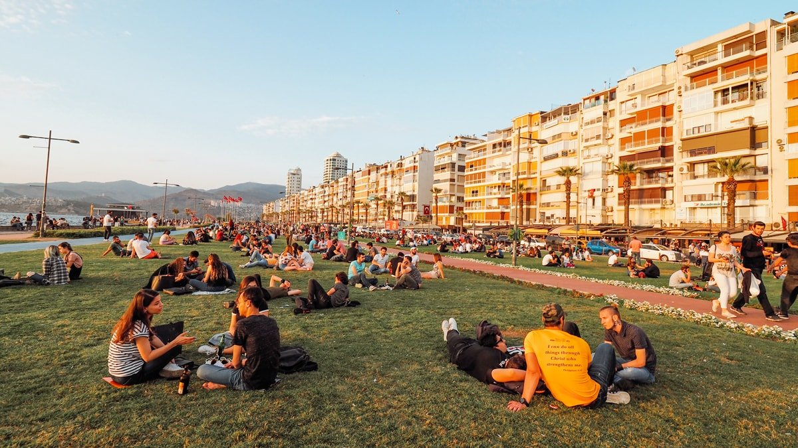
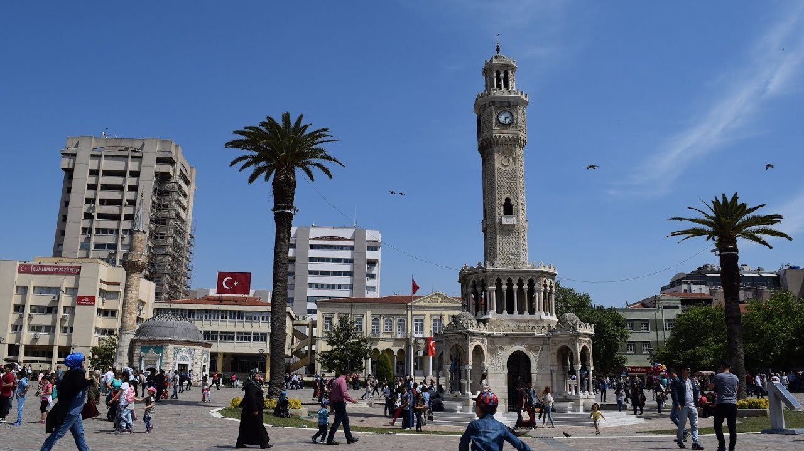

Saat kulesi
İzmir Saat Kulesi, İzmir'de Osmanlı padişahı II. Abdülhamid'in tahta çıkışının 25. yıldönümünü kutlamak için 1901'de inşa edilmiş tarihî saat kulesidir.
Konak Meydanı'ndaki İzmir Hükûmet Konağı, Kemeraltı Çarşısı girişi, Konak Yalı Camii ve İzmir Büyükşehir Belediyesi binası arasındaki alanda yer alır. 25 metre yüksekliğinde ve dört katlı olan kule, Sultan II. Abdülhamid'in iradesi gereği Osmanlı vilayetlerinde aynı dönemde meydana getirilmiş birçok saat kulesinden birisidir. Ancak özgün mimarisi ve yapımında izlenen yöntem nedeniyle diğer saat kuleleri arasında özel bir yer edinmiştir. Osmanlı saat kuleleri içinde en estetik görünüşlü ve en zarifi olarak kabul edilir.
Sultan Abdülhamid’in tahta çıkışının 25. yıl dönümü olan 1900'de cülûs yıl dönümü için tüm İmparatorlukta büyük kutlamalar organize edilmekte ve günün anısına kalıcı eserler yaratmak için çalışılmakta idi. Bu süreçte devrin İzmir Valisi Kamil Paşa, 1 Ağustos 1900 tarihinde yerel yöneticiler, mülkî ve askerî idareciler, memurlar ve şehrin ileri gelenleriyle bir toplantı gerçekleştirmiş, Sarı Kışla yakınında çeşmeli bir saat inşa edilmesi bu toplantıda kararlaştırılmıştır.[1]
İnşaatı gerçekleştirmek üzere oluşturulan inşaat komisyonu, Fransız mimar Raymond Charles Péré'nin Arap mimarisi üslubunda hazırladığı Çeşmeli Saat Kulesinin tasarımını uygun buldu. Temel atma töreni 1 Eylül 1900’de Abdülhamid'in 24. cülus yıl dönümü kutlamaları sırasında yapıldı. Kulenin inşaatı 1901 yılı Ağustos ayı içinde genel hatlarıyla tamamlandı. Saatlerin tedarik edilmesi dahil diğer eksiklerin törenden sonra tamamlanmasına karar verildi ve açılış, Abdülhamid'in 25. cülus yıl dönümü olan 1 Eylül 1901’de yapıldı.
Saatin dönemin Alman İmparatoru II. Wilhelm tarafından Osmanlı-Alman yakınlığı nedeniyle hediye edildiğine dair birtakım kayıtlar vardır.[kaynak belirtilmeli]
Kulenin üzerine II. Abdülhamid'in iktidarını yansıtmak amacıyla çeşitli semboller yerleştirilmişti. Saatlerin hemen altında iki tarafta tuğra, iki tarafta Osmanlı arması vardı. Cumhuriyet devrine, Osmanlıları hatırlatan ve öven yazı, işaret ve sembollerin kaldırılmasına ait kanunun çıkmasından sonra arma ve tuğralar kazınmış, yerlerine ay-yıldız yapılmıştır.[3]
Kule, 5,2 şiddetindeki 1974 İzmir depremi sırasında hasar aldı. Bu depremde saat kadranları üzerindeki son kat yıkılmış ve saat depremin oluş saati olan 02:04'te durmuştur. İki yıl içerisindeyse kule onarılmış ve saat tekrar çalışır vaziyete getirilmiştir. Saat, 2016 yılına kadar çalışır hâlde gelmiştir.
2016 Türkiye askerî darbe girişimi sonrasında düzenlenen "demokrasiyi koruma" amaçlı eylemler sırasında 16 Temmuz 2016 sabahı saat kulesi hasar görmüş, saat ve çeşmeler çalınmıştır.Saati çalan 1999 doğumlu genç, olaydan bir hafta sonra yakalanmıştır. Şubat-Eylül 2019 tarihleri arasında kulede yenileme ve güçlendirme çalışmaları yapıldı.

Alsancak
Kıbrıs Şehitleri Caddesini gezdikten sonra kendinizi esen rüzgâra bırakın ve meşhur Kordon boyunda, uzunca bir yürüyüş yapın. Bahar ve yaz dönemlerinde kıpır kıpır olan Kordon’da, bir yanda gitar çalıp eğlenen gençler, bir yanda ise çiğdem yiyen teyzeleri görebilirsiniz. Tüm kenti uçtan uca görebileceğiniz bir körfez manzarası eşliğinde yapacağınız bu yürüyüş sonrasında, siz de herkes gibi çimlere uzanarak onların arasına karışabilirsiniz.
İzmir’in en kalabalık semtlerinden biri olan Alsancak, tarihi binaları, butik müzeleri, deniz manzarası ve eğlence mekânlarıyla görenleri büyüsü altına alıyor. Kruvaziyer gemileriyle İzmir Limanına gelen turistleri karşılayan falcı kadınları, çiğdem (İzmir’de çekirdeğe çiğdem deniliyor) satan çocukları ve alabildiğine uzanan Kordon boyuyla rengârenk bir dünya burası.
Eski adı Punto olan Alsancak, yıllarca İzmir’in merkezi olarak anılmış ve kentin en zenginleri hep bu semt civarında yaşamış. Sabah akşam yaşamın hiç durmadığı Alsancak sokaklarında, her saat birilerini görmek mümkün. İzmir’e gelmişken Alsancak’a uğramadan geçmek olmaz diyorsanız, mutlaka yapmanız gereken bazı şeyler de var.

Konak Meydanı
İzmir’in Konak ilçesinde bulunuyor Konak Meydanı. İzmir Cumhuriyet Meydanı ve Gündoğdu Meydanı ile birlikte, İzmir’in en önemli üç meydanından biri olma özelliği taşıyor Konak Meydanı. İzmir Saat Kulesi, Konak Yalı Camii, Hükümet Konağı, İzmir Büyükşehir Belediye Binası bu meydanda yer alıyor. Konak Meydanı, ülkemizin en büyük meydanlarından biri aynı zamanda. Ortasındaki minik Saat Kulesi ise oldukça estetik bir görüntü katıyor meydana
Çevresinde çok fazla devlet dairesi olması, Konak Meydanı’nın güzelliğine biraz gölge düşürmüyor değil. Tüm bunların yanı sıra, denizin hemen dibinde yer alması, hatta denize güzel bir bağlantı yolu ile bağlı olması bir kez daha hayranlık uyandırıyor. Yalnız içinizden, keşke şurada bir ağaç gölgesi olsa’ diye de iç geçiriyorsunuz. Ancak her şeye rağmen, gökyüzü ve denizin oluşturduğu mavi dansı izlemek için bile gidilir Konak Meydanı’na. Eğer yolunuz İzmir’e düşerse, Konak Meydanı’nı da mutlaka görün.